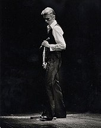

there are some things in this world that make the world better. one of these things is music. today, we'll be talking about classic rock and how it shaped modern pop and jazz influenced music. the artist featured will be david bowie, and the album will be Station To Station. such a sick album. i love the song "stay" because it's such a funky song
here you will find my second things
